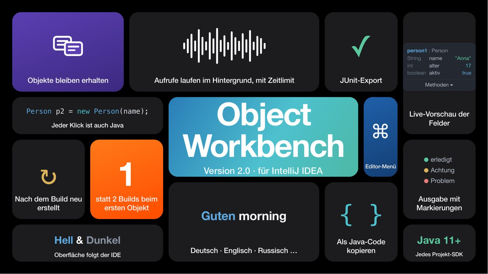
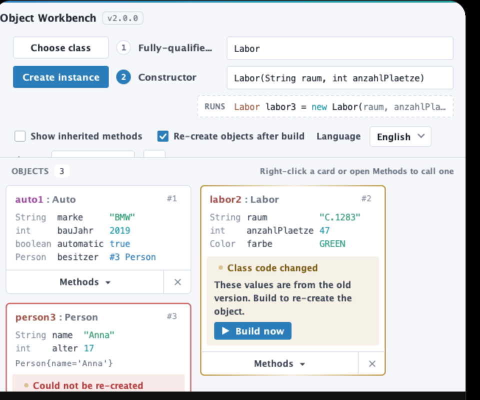

Lektion 1.1 — Teil 1: Grundlagen
Einführung & Entwicklungsumgebung
Lernziele
- erklären, was ein Programm ist und wozu ein Compiler und ein Debugger dienenAbschnitt 1
- den Weg vom Quelltext über den Bytecode zur Ausführung in der JVM beschreibenAbschnitt 2
- Java von interpretierten (Python) und direkt übersetzten Sprachen (C++) abgrenzenAbschnitt 2
- IntelliJ IDEA für den Unterricht einrichten: KI-Vorschläge aus, Autovervollständigung nur auf AbrufAbschnitt 4
- ein Projekt und eine Klasse anlegen und übersetzenAbschnitt 5
- mit der Object Workbench Objekte erzeugen, Methoden aufrufen und Attributwerte beobachtenAbschnitt 6
1 — Programmieren: worum es geht
Programmieren durchdringt heute viele Bereiche unseres Lebens: mobile Apps auf Smartphones und Tablets, Webanwendungen, Spiele, Server-Anwendungen, Cloud-Computing und vieles mehr. Die Konzepte dieses Kurses sind die Grundlage für all diese Anwendungsgebiete. Der Fokus liegt auf der Entwicklung von Backends – also Programmen, die auf Servern laufen und die Frontends (die Clients) mit Daten und Berechnungen versorgen.
Programmieren bedeutet grundsätzlich, eine Folge von Operationen auf einem Mikroprozessor (CPU) anzusteuern, die Daten im Hauptspeicher oder Permanentspeicher verarbeiten. Die Programmierung direkt auf Prozessorebene (Assembler-Sprachen) ist sehr aufwändig und wird heute nur noch für wenige Spezialanwendungen genutzt. Höhere Programmiersprachen wie Java, C# oder Python setzen auf einer höheren Abstraktionsebene an, die mehr dem menschlichen Denken entspricht, und ermöglichen eine schnellere und robustere Programmentwicklung.
| Begriff | Bedeutung |
|---|---|
| Quelltext (Code) | eine oder mehrere Dateien im reinen Textformat, die das Programm beschreiben |
| Compiler | übersetzt den Quelltext. Entspricht der Code nicht den Regeln der Sprache, erzeugt er Fehlermeldungen, die bei der Behebung helfen. |
| Laufzeitfehler | Fehler, die erst bei der Ausführung auftreten – ein übersetzbares Programm ist noch lange nicht korrekt. |
| Test | Code, der prüft, ob sich das Programm wie erwartet verhält; minimiert die Zahl der Fehler. |
| Debugger | hält das Programm an bestimmten Stellen an, damit man die aktuellen Werte analysieren kann. |
2 — Compiler, Bytecode und virtuelle Maschine
Programmiersprachen unterscheiden sich erheblich in der Art der Übersetzung:
| Sprache | Übersetzung | Folge |
|---|---|---|
| Python | Der Code wird erst bei der Programmausführung (zur Laufzeit) übersetzt – er wird interpretiert. | kein eigener Übersetzungsschritt; viele Fehler fallen erst beim Ausführen auf |
| C++ | Der Code wird direkt in ein maschinenlesbares Format übersetzt, das der Prozessor ausführt. | sehr schnell, aber das Ergebnis läuft nur auf einer Plattform |
| Java (und C#) | Der Compiler übersetzt in Bytecode; dieser läuft auf einer virtuellen Maschine (JVM, Java Virtual Machine). | dasselbe Programm läuft auf verschiedenen Betriebssystemen und Hardware-Architekturen |
Mitarbeiter.java --(javac, Compiler)--> Mitarbeiter.class --(java, JVM)--> Ausführung
Quelltext Bytecode Windows, macOS, Linux ...Zum Entwickeln brauchst du das JDK (Java Development Kit) – es
enthält den Compiler javac und die JVM. Entwicklungsumgebungen wie IntelliJ können ein
JDK direkt herunterladen.
3 — Entwicklungsumgebung: IntelliJ IDEA
Compiler, Debugger, Texteditor und vieles mehr werden üblicherweise gemeinsam in einer Entwicklungsumgebung (IDE, Integrated Development Environment) verwendet. Bekannte Entwicklungsumgebungen für Java sind Eclipse und IntelliJ IDEA. Wir verwenden IntelliJ IDEA der Firma JetBrains – von der ersten Stunde an.
- IntelliJ IDEA von jetbrains.com/idea herunterladen und installieren (die kostenlose Version genügt; mit Schul-Mailadresse gibt es über das Bildungsprogramm alle Funktionen gratis).
- Ein JDK braucht man nicht separat zu installieren: IntelliJ bietet beim ersten Projekt Download JDK an (Version 25 oder neuer).
4 — Einrichten: ohne KI, Vorschläge nur auf Abruf
IntelliJ ergänzt Code von sich aus: Schon beim Tippen erscheinen Listen mit Vorschlägen, und KI-Funktionen schlagen ganze Zeilen oder Methoden vor (grauer Text, der mit Tab übernommen wird). Für Profis spart das Zeit – beim Lernen nimmt es einem genau die Arbeit ab, durch die man programmieren lernt: die Syntax selbst schreiben, Namen selbst wählen, Fehler selbst finden. Deshalb schalten wir zu Beginn alle KI-Vorschläge ab und lassen die normale Autovervollständigung nur noch auf Abruf erscheinen.
KI-Vorschläge ausschalten
- File → Settings (macOS: IntelliJ IDEA → Settings) → Editor → General → Inline Completion: alle Häkchen entfernen – insbesondere Enable local Full Line completion suggestions und, falls vorhanden, die Cloud-Vorschläge.
- Settings → Plugins → Installed: alle KI-Plugins deaktivieren (Häkchen entfernen), z. B. Full Line Code Completion, JetBrains AI Assistant bzw. AI Assistant, Junie und – falls installiert – GitHub Copilot oder ähnliche.
- IntelliJ neu starten.
Autovervollständigung nur mit Strg+Leertaste
- Settings → Editor → General → Code Completion: das Häkchen bei Show suggestions as you type entfernen (in älteren Versionen: Autopopup code completion).
- Ab jetzt erscheinen beim Tippen keine Listen mehr. Wer einen Vorschlag will, drückt Strg+Leertaste (macOS: Ctrl+Leertaste) – z. B. nach
System.out.pri, umprintlnauszuwählen.
Auf manchen Systemen ist Strg+Leertaste schon belegt (z. B. zum Umschalten der Tastatursprache). Dann unter Settings → Keymap nach Basic (Code Completion) suchen und ein anderes Kürzel vergeben bzw. die Systemeinstellung ändern.
5 — Projekt und erste Klasse
- File → New → Project, links Java wählen.
- Name eingeben (z. B.
erste-schritte), Speicherort wählen. - Build system: Maven. Was Maven genau macht, sehen wir in Lektion 2.1 – vorerst ist es einfach der Projekttyp.
- JDK: ein JDK ab Version 25 auswählen oder mit Download JDK herunterladen.
- Das Häkchen Add sample code entfernen – wir schreiben alles selbst.
- Create.
Links im Fenster zeigt die Projektansicht die Ordnerstruktur:
erste-schritte/
├── pom.xml Projektkonfiguration (Lektion 2.1)
└── src/
├── main/java/ hier kommen unsere Klassen hin
└── test/java/ Testklassen (ab Lektion 1.7)
Eine Klasse legt man mit einem Rechtsklick auf src/main/java →
New → Java Class an. Wie wir gleich sehen werden, sind Klassen die zentralen Einheiten von
Programmen. Wir nennen die erste Klasse Person; IntelliJ legt die Datei
Person.java mit einem leeren Klassenrumpf an. Den füllen wir mit folgendem Code (abtippen,
nicht kopieren – die Bedeutung lernst du in den nächsten Lektionen):
public class Person {
private String name;
private int alter;
public Person(String neuerName, int neuesAlter) {
name = neuerName;
alter = neuesAlter;
}
public void geburtstag() {
alter = alter + 1;
}
public String begruessen(String andererName) {
return "Hallo " + andererName + ", ich bin " + name + ".";
}
}Übersetzt wird mit Build → Build Project (Hammer-Symbol, Strg+F9). Fehler zeigt IntelliJ schon beim Tippen mit roter Wellenlinie an; die genaue Meldung erscheint, wenn man mit der Maus darauf zeigt, bzw. nach dem Build im Fenster Build.
6 — Objekte ausprobieren: die Object Workbench
Normalerweise braucht ein Java-Programm eine main-Methode, um gestartet zu werden (Lektion 1.5).
Um Klassen schon vorher auszuprobieren, verwenden wir das IntelliJ-Plugin Object Workbench:
Es erzeugt Objekte, ruft ihre Methoden per Mausklick auf und zeigt jederzeit die aktuellen Werte ihrer
Attribute.

Installation
- Settings → Plugins → Marketplace, nach „Object Workbench“ suchen, Install,
- oder mit der ZIP-Datei aus dem Unterricht: Settings → Plugins → Zahnrad → Install Plugin from Disk… →
object-workbench-2.0.0.zipwählen. - IntelliJ neu starten (benötigt IntelliJ IDEA 2025.3 oder neuer).
Bedienung

- Tool-Fenster öffnen: View → Tool Windows → Object Workbench, oder im Editor Rechtsklick auf die Klasse → Create Instance on Object Workbench.
- Choose class: die Klasse wählen, z. B.
Person. - Create instance: einen Konstruktor wählen und die Parameter eingeben – Strings ohne Anführungszeichen, z. B.
Annaund17. Unter dem Formular steht, welche Java-Anweisung dabei ausgeführt wird:Person person1 = new Person("Anna", 17); - Für jedes Objekt erscheint eine Karte mit Typ, Name und Wert aller Attribute. Erzeugst du ein zweites Objekt, bekommt es eine eigene Karte – mit eigenen Werten.
- Methoden aufrufen: Rechtsklick auf die Karte oder Methods ▾, z. B.
geburtstag(). Danach aktualisiert sich die Karte; geänderte Werte leuchten kurz auf. Liefert eine Methode etwas zurück (wiebegruessen), wird das Ergebnis angezeigt. - Doppelklick auf eine Karte zeigt alle Details des Objekts.
Ändert man den Code und baut neu, erzeugt die Object Workbench alle Objekte automatisch aus ihrem Verlauf neu (Option Re-create objects after build). Hängt ein Methodenaufruf – etwa in einer Endlosschleife –, wird er nach einem Zeitlimit abgebrochen. Jeder Klick lässt sich als Java-Code kopieren.
Klasse, Objekt (Instanz), Konstruktor, Methode – diese Begriffe werden in den nächsten Lektionen genau erklärt. Wenn du die Schritte ausführen konntest, sind deine Entwicklungsumgebung und du bereit für die Java-Programmierung!
Projektschritt
Projekt „Personalverwaltung“ anlegen
Durch den ganzen Kurs zieht sich ein Projekt: eine Personalverwaltung für eine Firma. Sie beginnt mit einer einzigen Klasse und wird am Ende eine Webanwendung (Teil 4). Lege jetzt wie in Abschnitt 5 ein Maven-Projekt personalverwaltung an und darin die Klasse Mitarbeiter. Übersetze das Projekt und erzeuge in der Object Workbench zwei Mitarbeiter-Objekte – ihre Karten sind noch leer, weil die Klasse noch keine Attribute hat.
/**
* Personalverwaltung – die Klasse Mitarbeiter.
* Sie wird im Laufe des Kurses Lektion für Lektion ausgebaut.
*/
public class Mitarbeiter {
}Ersetze die von IntelliJ erzeugte pom.xml durch die aus dem Beispielordner – dann sind alle Projektstände im Kurs gleich aufgebaut. Erklärt wird sie in Lektion 2.1.
📁 Stand nach dieser Lektion: beispiele/1.1/ · Übersicht aller Stufen: beispiele/README.md
Häufige Fehler
Unter Choose class taucht die neue Klasse nicht auf, oder es erscheint ein Hinweis auf geänderten Klassencode.
Das Projekt wurde noch nicht (fehlerfrei) gebaut. Build Project ausführen und rot markierte Fehler beheben – die Workbench kennt nur übersetzte Klassen.
Der Compiler meldet class Mitarbeiter is public, should be declared in a file named Mitarbeiter.java.
Eine public-Klasse muss in einer gleichnamigen Datei liegen – inklusive Groß-/Kleinschreibung. Klasse umbenennen (Shift+F6), nicht nur die Datei.
IntelliJ zeigt Project JDK is not defined, nichts lässt sich übersetzen.
Unter File → Project Structure → SDK ein JDK auswählen oder direkt herunterladen (Download JDK).
Quiz
4 Fragen · zum Aufklappen klicken
Frage 1 Was erzeugt der Java-Compiler javac aus einer Datei Person.java?
.class-Datei unter Windows, macOS und Linux.Frage 2 Wozu dient ein Debugger?
Frage 3 Welche IntelliJ-Einstellung ist beim Programmierenlernen sinnvoll?
Frage 4 Was kannst du mit der Object Workbench machen?
Mehrere Antworten sind richtig.
main gibt: Objekte erzeugen, Methoden aufrufen und Attributwerte ansehen. Übersetzt werden muss die Klasse trotzdem.